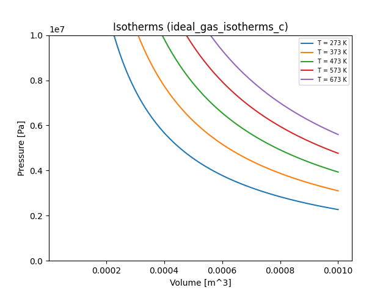
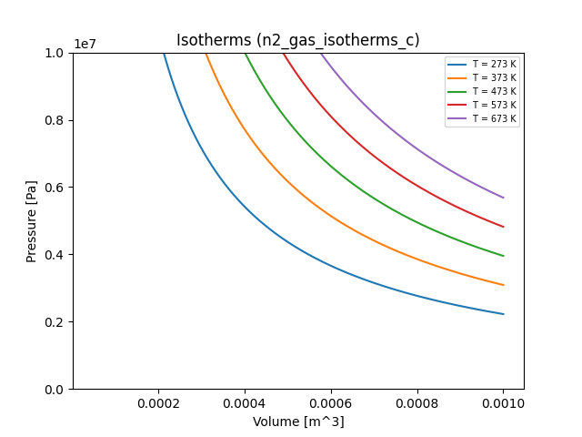

Example: Van der Waals Gas
The example in this section focuses on the Van der Waals gas law, a generalization of the ideal gas law that accurately describes many gases over a great range of temperatures, pressures, and volumes. The example has three parts.
In this example, we use the Standard International (SI, also called mks) system of units. When we define a quantity, we denote its units in square brackets. For example, the mass of an object could be written as \(m\) [kg]. Quantities without units are followed by [-].
The code for the example is available in the examples folder of the Skywalker source tree.
We'll use Python to make a few plots along the way. We use Python 3 and the matplotlib library, which comes with many scientific Python packages like IPython. If you're not using one of those packages, you can usually install matplotlib with a command like the following:
pip3 install matplotlib
Ideal gas
Recall that the ideal gas law relates the pressure, temperature, and volume of a gas through the equation of state
where
- \(p\) is the gas pressure [Pa]
- \(V\) is the volume occupied by the gas [m\(^3\)]
- \(\nu\) is the number of moles of gas contained in the volume \(V\) [-]
- \(R\) is the universal gas constant [J \(\cdot\) K\(^{-1} \cdot\) mol\(^{-1}\)]
- \(T\) is the temperature of the gas [K]
Strictly speaking, the ideal gas law holds for gases whose molecules don't interact with one another. While this is not true for any known substance, it's a good approximation for gases whose molecules interact only weakly.
Van der Waals gas
The equation of state for the van der Waals gas law is a refinement of the ideal gas law that attempts to model weak interactions between particles using a pair of parameters \(a\) and \(b\). The equation is
where \(a\) represents the effects of cohesive forces within a molecule, and \(b\) represents effects of molecules having a finite size. Clearly, when \(a=b=0\), this equation reverts to the ideal gas law.
The Van der Waals approximation is a significant improvement on the ideal gas law, and can be used to study various phenomena. Our discussion follows that in Chapter IV of Thermodynamics, by Enrico Fermi, Dover Publications, NY (1936).
Part 1: Plotting Isotherms
An isotherm is a thermodynamic process in which the temperature remains the same throughout. Isothermal processes are important in any setting in which smaller physical systems interact with a heat reservoir at a given temperature. They are conveniently expressed using PV diagrams, which are just XY plots with the volume \(V\) on the \(x\) axis and the pressure \(p\) on the \(y\) axis.
Ideal gas
We can construct an isotherm curve for an ideal gas by writing the pressure \(p\) as a function of \(V\) and \(T\) for a single mole of gas (\(\nu = 1\)):
Let's write a simple Skywalker program that takes \(V\) and \(T\) as input and
computes \(p\) as output. Our program will read the following input file, named
ideal_gas_isotherms, which constructs an ensemble of \((V, T)\) pairs,
with \(V \in [5^{-5}, 1^{-3}]\) m\({^3}\) and \(T\) assuming the values 273 K, 373 K,
473 K, 573 K, and 673 K.
input:
lattice:
V: [5.0e-5, 1.0e-3, 1.0e-6] # [m^3]
T: [273, 373, 473, 573, 673] # [K]
Here's our program:
1 2 3 4 5 6 7 8 9 10 11 12 13 14 15 16 17 18 19 20 21 22 23 24 25 26 27 28 29 30 31 32 33 34 35 36 37 38 39 40 41 42 43 44 45 46 47 48 49 50 51 52 53 54 55 56 57 | |
1 2 3 4 5 6 7 8 9 10 11 12 13 14 15 16 17 18 19 20 21 22 23 24 25 26 27 28 29 30 31 32 33 34 35 36 37 38 39 40 41 42 43 44 45 46 47 48 49 50 | |
1 2 3 4 5 6 7 8 9 10 11 12 13 14 15 16 17 18 19 20 21 22 23 24 25 26 27 28 29 30 31 32 33 34 35 36 37 38 39 40 41 42 43 44 45 46 47 48 49 50 | |
Click through the different tabs for the C, C++, and Fortran versions of the program. You can see that they're very similar. Here's what's going on:
- An ensemble is loaded with a
load_ensemblefunction. If the attempt to load the ensemble fails, the program halts. - The members of the ensemble are processed one by one. In the C and Fortran
programs, this happens in a
while/do whileloop, in which a call tosw_ensemble_nextorensemble%nextassociates theinputandoutputvariables with a specific ensemble member. In C++, this loop is hidden inside a call toensemble->process, which accepts a lambda function whose arguments are the properly associatedinputandoutputvariables for each member. Inside this loop:- the gas volume \(V\) and temperature \(T\) are extracted from the
inputvariable for the current ensemble member - the gas pressure \(p\) is computed from \(V\) and \(T\)
- the computed pressure \(p\) is stored in the
outputvariable for the current ensemble member
- the gas volume \(V\) and temperature \(T\) are extracted from the
- After every ensemble member has been processed in Step 2, a Python module containing all input and output data for the ensemble is written.
- The ensemble is deleted with an appropriate function call or command.
For a more detailed explanation of any of these steps, see the API section.
If you like, copy and paste any version of the program into a text editor, save
it, and build it, linking it against libskywalker.a or libskywalker_f90.a
as needed. Then run it in a directory containing ideal_gas_isotherms.yaml,
and check to see that an appropriate .py file appears.
Here's a plot of the resulting isotherms:

If you want to generate this plot for yourself, run the
plot_isotherms.py
script in the examples/ folder of the repo on the appropriate .py file,
leaving out the .py suffix. E.g.
python3 plot_isotherms.py ideal_gas_isotherms_c
Van der Waals gases
Now that we've successfully used Skywalker to plot the isotherms of an ideal gas at several temperatures, we can generalize our program(s) to handle Van der Waals gases. The expression for the gas pressure is
First, we must add the two parameters \(a\) and \(b\) as input. Here's a YAML input file that sets these parameters for diatomic nitrogen gas:
input:
fixed:
a: 0.137 # [Pa m6/mol2]
b: 3.87e-5 # [m3/mol]
lattice:
V: [5.0e-5, 1.0e-3, 1.0e-6] # [m^3]
T: [273, 373, 473, 573, 673] # [K]
And here's one for carbon dioxide:
input:
fixed:
a: 0.3658 # [J m3/mol2]
b: 4.29e-5 # [m3/mol]
lattice:
V: [5.0e-5, 1.0e-3, 1.0e-6] # [m3]
T: [273, 373, 473, 573, 673] # [K]
Now we must modify our programs to include these input parameters in the calculation of the gas pressure. Here are code snippets that implement these changes:
Replace lines 38-40 with
38 39 40 41 42 43 44 45 46 47 48 49 | |
Replace lines 26-28 with
26 27 28 29 30 31 32 33 34 35 36 37 | |
Declare real(swp) variables a and b, and replace lines 39-40 with
39 40 41 42 43 44 45 46 | |
With these changes, the program can now build the ensembles indicated in the
n2_gas_isotherms.yaml and co2_gas_isotherms.yaml files. Here are all of the
resulting plots (including our ideal gas for comparison):

Exercises
- Experiment with different values of \(a\) and \(b\). Are there values that trigger interesting or surprising behavior? Try to interpret these values physically.
Part 2: Determining the Saturation Vapor Pressure in Carbon Dioxide
You may be curious about what's happening with the blue curve representing the isotherm for \(T = 273\) K for carbon dioxide. If you follow the curve starting from the right, it represents a compression process for the gas at a constant temperature. Somewhere around \(V = 2 \times 10^{-4}\) m\(^3\), something funny happens: the gas pressure decreases under compression. This simply doesn't happen in reality. What's going on?
What's going on is a phase change: carbon dioxide condenses to liquid form under these conditions. The gas is no longer in a homogeneous state, and the Van der Waals equation of state isn't satisfied for the gas/liquid mixture. Rather, the pressure (called the saturation vapor pressure) remains constant alongside the temperature over the course of the phase change. One way to understand this is that under a phase change, the system alters its binding energy but not its kinetic energy. The pressure in a Van der Waals gas depends only on its kinetic energy (because it assumes that the particles interact only weakly), so it remains constant.
In other words, the saturation vapor pressure is a horizontal line \(p(V) = p_s\) over the course of the phase change. It looks like this:
Suppose we wanted to modify our program to make use of these ideas. Our objective is to find the value of the saturation pressure, or the height of the horizontal line in the vicinity of the phase change. One might think that we must use the Clausius-Clapeyron equation, which involves the latent heat of evaporation and the specific volumes of the gas and liquid phases. However, the shape of the isotherm in question actually gives us enough geometric information to use an iterative approach that does a decent job of estimating the saturation vapor pressure using Maxwell's equal area rule.
Approximating the saturation vapor pressure numerically
We don't have a curve \(p(V)\) to work with in our calculation of \(V_s\)--we only have a discrete set of points with volumes \(\{V_i\}\) and pressures \(\{p_i\}\). Let \(i_1\) be the index of the first point along the (horizontal) phase change curve, and let \(i_2\) be the index of the last point along this curve. These two points have the same pressure, which is the saturation vapor pressure. How do we determine them?
Suppose we start the points at two distinctive locations and move them around till they have equal pressure. For example, we can set \(i_1\) to the point at the trough of the Van der Waals isotherm, and \(i_2\) to the local peak to the right of this trough. Then we know that our initial value of \(i_1\) is too large, and that our initial value of \(i_2\) is too small.
We can now devise an iterative scheme that moves \(i_1\) and \(i_2\) apart until the difference in their pressures hits a minimum.
pdiff := abs(p(i2) - p(i1))
Do forever
# Trying moving i1 to the left, reversing if we hit a higher
# pressure difference.
prev_i1 := i1
i1 := i1 - 1
p21 := abs(p(i2) - p(i1))
if p21 < pdiff
pdiff := p21
else
i1 := i1 + 1
# Trying moving i2 to the right.
prev_i2 := i2
i2 := i2 + 1
p21 := abs(p(i2) - p(i1))
if p21 < pdiff
pdiff := p21
else
i2 := i2 - 1
# If we didn't move either point, we're finished.
if i1 = prev_i1 and i2 = prev_i2
break
Once we've found a plausible saturation vapor pressure, we can increase or decrease it until the areas bounded by the original curve and the flat saturation pressure sum to zero. These areas are described by the integral of the pressure over the range of volumes in question, so what we're looking for is
or
where $p_s = p(V_s) $ is the saturation vapor pressure and \(V_1\) and \(V_2\) are, respectively, the minimum and maximum volumes at which \((p(V) = p_s\) in the original Van der Waals pressure curves. These integrals can be approximated using a simple quadrature rule such as the midpoint rule.
Exercises
- Try to implement this iterative scheme to compute the saturation vapor pressure for the above isotherm. (Hint: use an input that specifies a single temperature.) Extra credit: can you add a setting to your program that specifies whether or not to compute the saturation vapor pressure? You can read about settings in the Input Format and API sections.
- Can you find the critical point for carbon dioxide by exploring various Van der Waals isotherms? How do you know when you've found it?